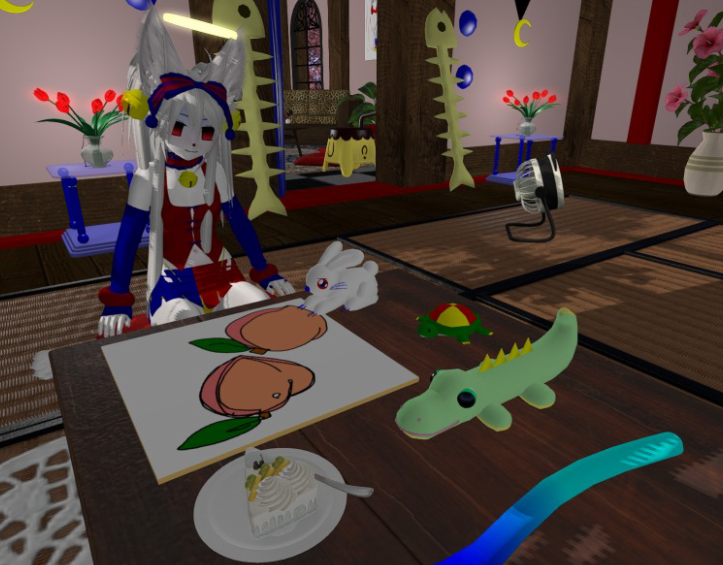

i've been keeping a second life photo diary since before both conejo & waterfairy existed..around 2018 is when i started the habit.
second life has a built in screenshot tool, and i use that and just take screenshots whenever i feel like it
throughout the years my photography skills & second life skills have increased, and the diary remains pretty candid, nothing in it is staged or planned save for photo shoots here and there
i omit a couple but not a lot, its uploaded mostly as is
i wouldn't post the whole diary like i do now, just small sets of photos at a time
the diary combined with conejobeat and other events got some people interested in joining second life, a lot of conejo residents came in because of the twitter precense
then comes glaring issue, that site and the photo diary format arent very comptaible
i tried some alternatives, but in the end i came to the conclusion to start sharing it here
when i check the entry folders after a couple months im shocked at how it natrually materializes into art
its worth sharing, i like having things i can share for free and it feels right.. for now.
the whole diary is well over 11 thousand pictures by now!!
 in the beginning, i 'lived' in second life a lot more
this is no longer the case, but because most of my relationships have come from conejo, the line is still blurred
improvisation & chance has always been my strong suit, a major part of how i work..
i look through the diary and i see my life clearly.
i see relationships that have fallen apart, things that havent worked out, ways things have changed . . .
second life diaries reflect a raw representation of virtual world, and from someone who actually lives in it.
second life, like a lot of other virtual worlds, is a case where if you dont take a picture, a place could suddenly be gone forever, with no way of going back or seeing it again.
as conejo grows, the diary's purpose deepens
i played a huge variety of virtual worlds growing up and a lot of them have little to nothing saved or documented
if you play second life a lot, consider taking more screenshots, i'd be happy to see more diaries around
i don't intend to put older entries up in web format because it'd be a lot of work.
but someday, i'd like to write more about my experience, and share those pictures somehow..
..MORE THOUGHTS ABOUT THE DIARY
i started doing the diary during a dark time where second life became the sole light in my life
it wasn't intentional to have a diary that feels so personal be one of my major outputs, but it makes sense in a lot of ways.
it activates vivid memories of what i was doing irl at the time, or what the time felt like, and its really magical.
the diary makes it all beautiful, leaving no bad taste in my mouth.
i can accept it for what it is. life is a balance of good and bad.
there is not enough out there that frames second life as the beautiful place it is.
builds change, people dont log on again, etc.. so photography is very important in helping virtual worlds transcend time.
thats a big factor for me, preserving not just conejo but art i see around second life.
its proven useful because places did dissapear and i only have my diary to revisit them..
BACK